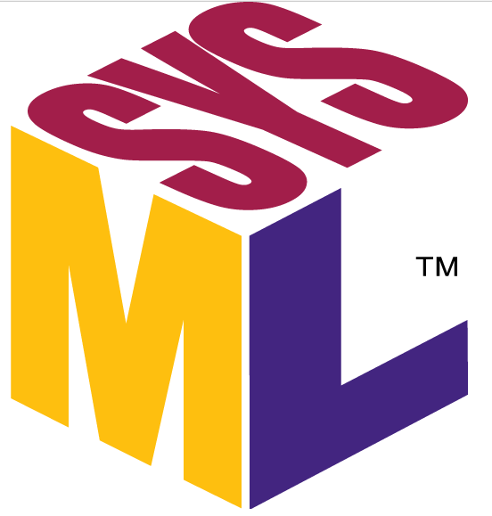

Thibaud Piccinali


Final-year student at a generalist engineering school, École Centrale de Lille (Master’s level).
I’m passionate about computer science and programming, especially when applied to real-world use cases such as embedded systems.
Currently completing my end-of-studies internship, I’m looking for my first full-time position starting from October 2025.
 Onshape
Onshape
 KiCad
KiCad
 Pytorch Lightning
Pytorch Lightning

SYSML
Onshape
KiCad
Pytorch Lightning
Native language
.svg.png)
Fluent (C1), TOEIC 955

Beginner (end A2), university courses

Intermediate level (B1)
April 2025 - September 2025
CLS | Villeneuve-d'Ascq, France
Final internship - Deep Learning Engineer
Integrated into the Earth & Hydrology team within the R&D department, I contributed to the development of solutions enabling Earth analysis using satellite imagery (remote sensing).
More specifically, the internship’s goal was to study Foundation Models to assess their potential for change detection.
The internship began with a comprehensive state-of-the-art review of these technologies applied to this field. Studies and comparisons were conducted to identify the most promising models.
Next, we decided to integrate these models as well as change detection into a community-recognized framework for remote sensing (Terratorch).
This framework allows for simplified usage (training, inference) of the models, notably through configuration files.
April 2024 - August 2024
Worldline | Seclin, France
Master Internship - Generative AI Engineer
Integrated into the CXSC team (specialized in user experience) within the R&D department, I contributed to the development of innovative solutions offering new ways to perform payments.
Specifically, the team focused on using Large Language Models (LLMs) for autonomous payments.
During this internship, I participated in the development of a smartphone application incorporating these technologies.
We developed a program that listens to inputs from a smartphone and analyzes them using LLMs.
The idea was to determine if the user was likely to travel in the coming days.
If the program concluded that the user was very likely to travel, it would automatically conduct a personalized route search. This personalization was also performed using LLMs and the user’s data.
Finally, a defensive module (also using LLMs) ensured the legitimacy of this transaction.
This internship provided the opportunity to produce a functional prototype which was presented internally to international teams.
October 2023 - March 2024
Inria-Defrost Laboratory | Villeneuve-d’Ascq, France
Master Internship - Computer Vision & Robotics Engineer
Integrated within the Defrost team (specializing in soft robotics), I assisted a PhD student with computer vision tasks.
The focus was on minimally invasive surgery, where we sought new ways to detect and eliminate cancer cells.
This internship was organized around two major projects, detailed below.
Read the report (FR only)
Shape-superposition based augmented reality
Development of an augmented reality algorithm using depth cameras to capture point clouds of an object, which are then compared to the object’s known theoretical shape. From this comparison, projection and overlay are obtained.
Optical servoing of a soft robot
I contributed to the control system of the soft robot used in my supervisor’s research. Specifically, I utilized a depth camera and filtering algorithms to determine the position of the laser projected by the robot. Thanks to this control system, the robot is able to accurately reach the target.
2021 - 2025
Ecole Centrale de Lille | Villeneuve-d'Ascq, France
Generalist Engineering School - Specialization in Embedded Systems

After two years of preparatory classes (MPSI-MP) and based on my results in the CPGE competitive exams, I was fortunate to join Ecole Centrale de Lille.
At Centrale, I developed my skills as a generalist engineer (programming, mechanical parts design and manufacturing, project management, engineering sciences...) and also followed a specialization in embedded systems (systems programming, real-time systems, control of systems, communication networks, systems modeling...) during my final year.
As part of this program, I also completed an exchange semester (see details below), a gap year during which I undertook two internships (see details above), as well as a final year internship (see details above).
Over these years, I completed a large number of projects. Below you will find a summary of the most significant ones.
Dart'O'Matic: Automatic Dart Game Management System
This project, carried out independently, consists of a system capable of automatically managing the flow of a dart game. It relies notably on the use of cameras to estimate the position of the darts on the board. This work can be broken down into three parts: building a wooden structure to hold all the components, developing a central unit to manage the game, and setting up a web server to facilitate player interaction with this unit.
Control of a Robot Fleet Managing Warehouse Logistics
This project, carried out in a group of 3 students, involves designing a system capable of controlling a fleet of robots within a warehouse. Through a terminal interface, a user can select items. A mobile robot is then responsible for retrieving these items in the warehouse and delivering them to a collection bin. This work addresses the following challenges: position control of robots, collision-free trajectory planning, continuous task assignment, inventory management, among others. The project focuses on system modeling, design, and integration of the key technical components.
Weather Station

This project, carried out in a group of 5 students, consists of building a weather station that collects data and makes it accessible via a web interface. For this project, the specifications required us to work with a specific type of hardware, which led us to the design and manufacture of our own PCB. A housing integrating all the components was also designed and fabricated using the school’s 3D printers (PLA and resin).
Project Orion: Design and Development of a Smartwatch

This project, carried out by a group of 13 students over one and a half years, involves the design and creation of a smartwatch. Using an actuator developed by our partner (the IEMN laboratory) that provides innovative vibration sensations, this watch allows the user to be notified of incoming alerts on their smartphone. The project includes the mechanical design (case and strap), the electronic design (board and components), as well as the development of an Android application for configuring the watch.
Design and Fabrication of a Halfbike

This project, carried out by a group of 7 students, involved the design and manufacturing of a halfbike (a hybrid between a bicycle, scooter, and skateboard). The halfbike was first modeled using CAD tools (Onshape), its parts were then produced (waterjet cutting, bending) and finally assembled (MAG welding).
March 2023 - August 2023
Doshisha University | Kyoto, Japan
Exchange semester

During my studies, I had the opportunity to complete a semester exchange at Doshisha University in Japan. This semester had a strong impact on me as it allowed me to open up to the world, discovering new cultures, traditions, and different working methods. Regarding the coursework, I took advantage of this exchange to complement my general engineering education. I studied subjects such as programming, materials chemistry, numerical analysis, signal processing, and engineering ethics. At the university, I was attached to the Information System laboratory where I carried out a research project. Details of this work are provided below.
How to use artificial intelligence to analyse paintings?

This project, carried out independently, consisted of a study to evaluate the performance of artificial intelligence algorithms (particularly Object Detection algorithms) to estimate the position of the focal point on a painting. This project represents one of my first works using artificial intelligence.